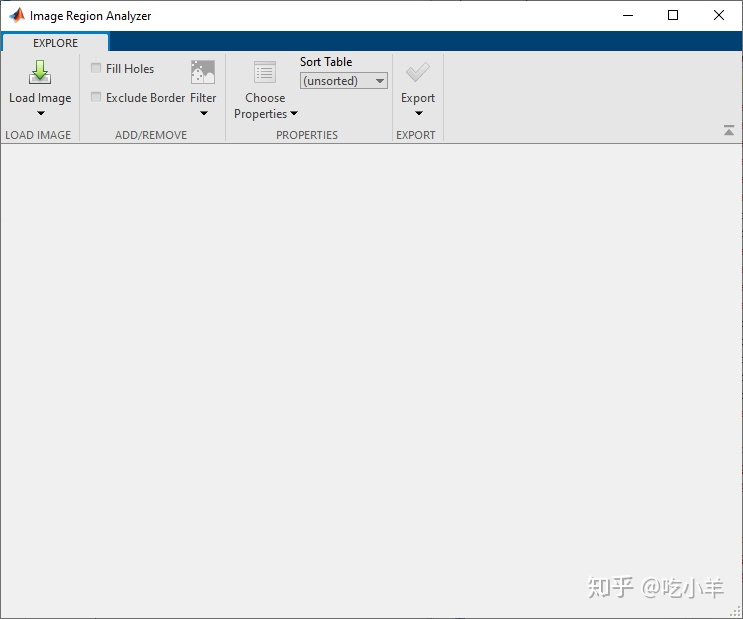
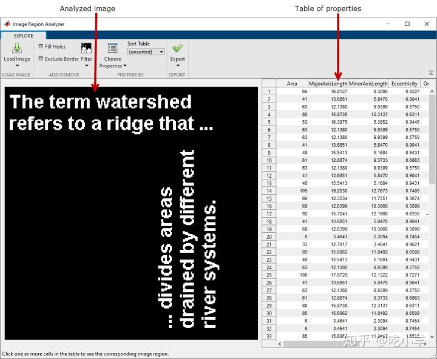
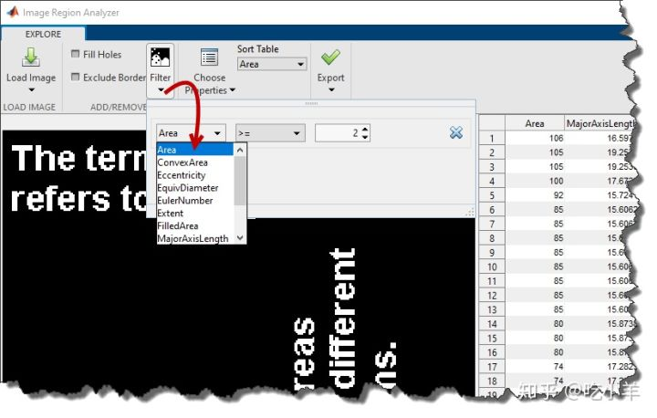
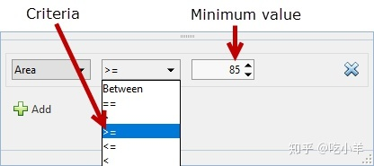
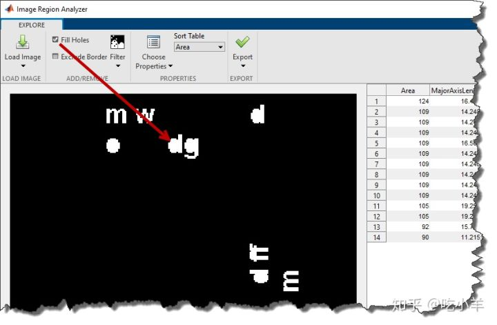

Home
本示例说明如何通过基于图像中区域的属性过滤现有的二进制图像来创建新的二进制图像（如蒙版图像）。
将二进制图像读入MATLAB®工作区。
BW = imread('text.png');
从MATLAB工具栏打开“图像区域分析器”应用。在“应用程序”选项卡上的“图像处理和计算机视觉”部分中，单击“图像区域分析器” :


在应用程序工具栏上，单击“加载图像”，然后选择“从工作区加载图像”以将图像从工作区加载到应用程序中。在“从工作区导入”对话框中，选择您读入工作区的图像，然后单击“确定”。
您还可以使用imageRegionAnalyzer函数从命令行打开应用程序，并指定要分析的图像.
imageRegionAnalyzer(BW);
图像区域分析仪应用程序显示所选的图像和表，其中每一行是图像中识别的区域，并且每个列是区域的属性，如面积，周长，和取向。（“图像区域分析器”应用程序使用regionprops命令来识别图像中的区域并计算这些区域的属性。）

要过滤区域属性的值，请在应用工具栏上单击“过滤器”。然后，选择要筛选的属性。

接下来，指定过滤条件。例如，要创建一个图像以除去除最大区域以外的所有区域，请选择大于或等于符号（> =），然后指定最小值。要确定所需属性的最小值，可以按该属性对表中的值进行排序。该应用使用bwpropfilt和bwareafilt函数过滤二进制图像。

要过滤其他属性，请点击添加。该应用程序显示另一行，您可以在其中选择属性并指定过滤条件。结果是两个过滤操作的交集（逻辑与）。
如果要创建蒙版图像，则可以选择对蒙版执行清理操作，例如清除所有触摸边界的前景像素并在对象中填充孔。填充孔可以更改图像中区域的面积，并且由于其低于阈值而被过滤的区域可以变得可见。

完成图像过滤后，可以保存它。单击导出，然后选择导出图像。在“导出到工作区”对话框中，接受遮罩图像的默认名称，或指定其他名称。然后，单击确定。
======================================================================
我的测试结果及程序
下面是我测试的代码：

注：本文根据MATLAB官网内容修改而成。